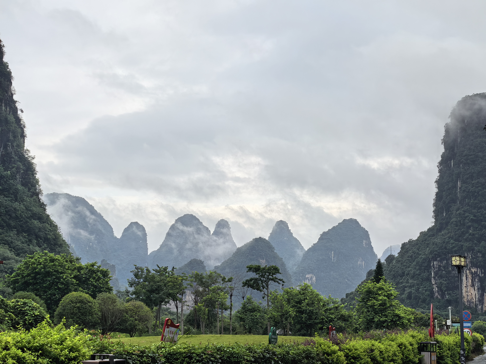

WANDER
CHINA.
☰
首页
HOME
目的地
PLACES
旅行路线
ROUTES
旅行相册
GALLERY
旅行指南
GUIDE
COLLECT THE MOMENTS
把风景，
装进相册
选择一个目的地，慢慢欣赏这段旅程里的八个瞬间。
04 / 05
YOUR PHOTO STORIES
我的旅行片段
选择目的地
桂林
重庆
新疆喀纳斯
西安
每组 8 张照片 · 自动轮播

‹
›
PHOTO STORIES
桂林 · 我的旅行
01 / 08